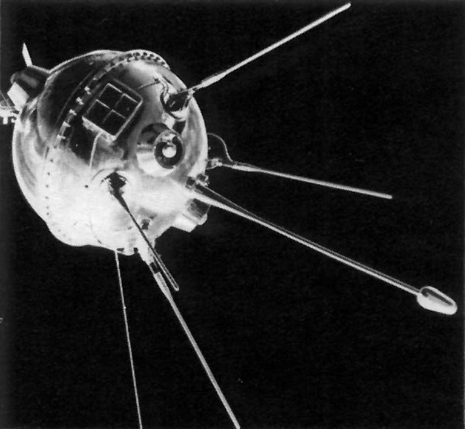

1957

Sputnik 1 was launched on October 4, 1957 by the USSR, which eventually caused the entire space race. This was the first satellite that was launched into space1
1958

NASA was created on July 29, 1958 by President Eisenhower in response to the launch of Sputnik NASA had 8 main goals 2:
1. The expansion of human knowledge of phenomena in the atmosphere and space;
2. The improvement of the usefulness, performance, speed, safety, and efficiency of aeronautical and space vehicles;
3. The development and operation of vehicles capable of carrying instruments, equipment, supplies, and living organisms through space;
4. The establishment of long-range studies of the potential benefits to be gained from, the opportunities for, and the problems involved in the utilization of aeronautical and space activities for peaceful and scientific purposes;
5. The preservation of the role of the United States as a leader in aeronautical and space science and technology and in the application thereof to the conduct of peaceful activities within and outside the atmosphere;
6. The making available to agencies directly concerned with national defense of discoveries that have military value or significance, and the furnishing by such agencies, to the civilian agency established to direct and control nonmilitary aeronautical and space activities, of information as to discoveries which have value or significance to that agency;
7. Cooperation by the United States with other nations and groups of nations in work done pursuant to this Act and in the peaceful application of the results thereof;
8. The most effective utilization of the scientific and engineering resources of the United States, with close cooperation among all interested agencies of the United States in order to avoid unnecessary duplication of effort, facilities and equipment
NASA became operational on October 1st 19583 and it became part of the National Advisory Committee for Aeronautics, taking over the employees and the budget. The first high profile cases that it took over were Project Mercury and Project Gemini which occurred in 1961 and 1965 respectively.
1959
Luna 1 became the first spacecraft to reach the moon 4, the first spacecraft to observe gasses in space, the first spacecraft to observe magnetic fields, and the first spacecraft to orbit the sun.
Luna 2 became the first spacecraft to land on the moon
Go Back
References
Cold War NASA NASA Creation LUNA 1